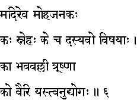
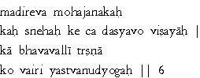

|

|
Verse 6 - Meaning:
Q: What spoils the mind (madhi) and brings down its efficiency like an alocholic drink ?
A: Love (or) Friendship (snehah) of the abnormal or extreme kind.
Q: What can be considered as thieves in a man ?
A:The Sense Objects that bog down the mind from its higher faculties (vishaya).
Q: What is the nature of the bhava (sagaram) , the vicious cycle of births and deaths ?
A:It is the continuing thirst of desires.
Q: Who is the enemy ? (ko vairi)
A:An idle disposition.
|